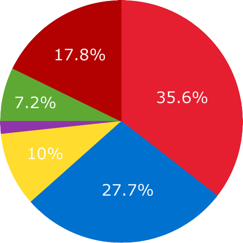
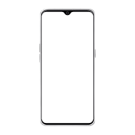

O Brasil é o país que mais sofre com ligações
de spam no mundo.
Desde 2017, as chamadas telefônicas de
spam no Brasil aumentaram 141%.
O brasileiro recebe em média 49,9 ligações
de spam por mês.
Ligações indesejadas no Brasil

----------------------------------------------
O que é ?
----------------------------------------------
Chamadas verificadas
Esse novo recurso do Google, exclusivo para
telefones Android, permite que empresas exibam
para o cliente na hora da chamada sua marca,
logotipo e até mesmo o motivo da chamada.
A Telecall é a primeira operadora de telecom no
Brasil a oferecer esse recurso do Google.

Experiencia do usuario padrão
Experiencia do usuario com Verified Calls
----------------------------------------------
Compatibilidade
----------------------------------------------
Exclusivo para sistema operacional Android
através do aplicativo Telefone.
Pré-instalado em telefones mais recentes ou pode
ser baixado do Google Play Store para a maioria
dos dispositivos com Android 9.0.
Hoje no Brasil existem quase 239 milhões de
celulares smartphone ativos, sendo que o sistema
Android detém uma participação de mais de 86%
do mercado de sistema operacional móvel no país.
----------------------------------------------
Como Funciona?
----------------------------------------------
Uma chamada telefônica
de uma empresa assinante
é feita para um cliente
potencial ou existente.
Em nanossegundos, a
solicitação é encaminhada
para a plataforma da Telecall
que processa a chamada e
adiciona as informações
verificadas antes de
encaminhá-la ao destinatário.
As informações aparecem
na tela do celular do
recipiente que atenderá a
ligação com uma chamada
de voz normal.
----------------------------------------------
Benefícios
----------------------------------------------
Estabeleça Confiança
Clientes são mais propensos a atender chamadas de organizações com os quais estão
familiarizadas e com as quais já tem relação.
Agilize a Conexão
Quando o motivo da chamada é claro, a chance de o cliente atender é muito maior e a conexão
com ele mais rápida e eficiente.
Melhore a Experiência do Cliente
O nome da marca, logotipo e a visualização do motivo da chamada oferecem uma experiencia
melhor e muito mais amigável para o cliente.
----------------------------------------------
Usos
----------------------------------------------
Aviso de problemas de fraude de cartão de crédito.
Aviso de atrasos e cancelamentos de voos.
Agendamentos de serviços, entregas, reparos e
instalações.
Avisos sobre agendamentos, exames e resultados.
Oferecer uma melhor experiência de vendas e
promoções.